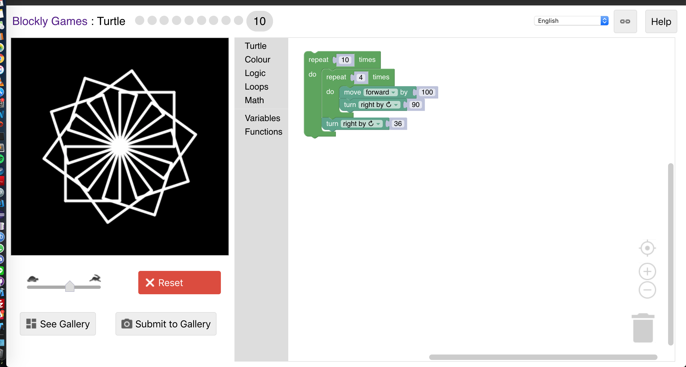

Draw a "+" figure 150 units high by 150 units wide.
Draw the letter 'W'. (Bonus marks: draw the word "WHY")
Draw 5 parallel horizontal lines 400 units long separated by 25 units.
Use turtle graphics to draw a sequence of squares (100 units per side) that have a common lower left corner, but are each drawn at a different angle. There should be at least 10 squares in the sequence.
Draw a set of 9 squares in a 3x3 arrangement. Draw one in each of the colours: black, yellow, green, red, blue, purple, grey, orange, and a colour of your choosing.
Draw a circle.